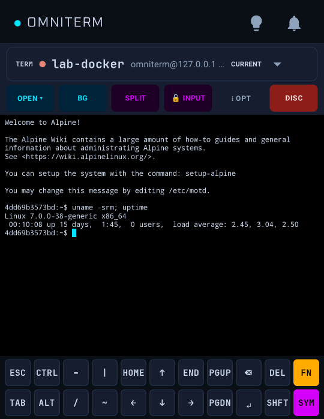

Terminal

Sessions
Open Term for an interactive SSH shell. Sessions run in the background and stay connected when you leave the screen. A host's sign-in banner is shown at the top, with control characters removed.
Split screen
SPLIT shows two sessions side by side or stacked. The focused pane owns the keyboard and the special-key bar.
tmux-backed sessions
Where tmux is available, sessions survive network drops and app restarts and reconnect automatically. Forget drops a saved session from the phone and leaves it running; End session stops it on the server. Attach existing tmux joins a session you started elsewhere, on Linux, macOS or BSD hosts.
Using the terminal
- Special-key bar, hardware keyboard, swipe typing, adjustable font size and reflowing scrollback.
- Themes: follow the app, Omni Dark, Solarized Dark, Matrix and Light.
- Find in terminal searches the scrollback and screen and highlights matches.
- Long-press copy for the visible screen or the full scrollback; a Bottom button returns to the live tail.
- When a shell ends, its output stays on screen with the exit status until you dismiss it.
Quick connect, Telnet and USB serial
These three need Unlock OmniTerm in the Play Store build and are always available in the open-source build. Quick connect opens SSH to an unsaved host and writes nothing to the database. Telnet is not encrypted: anything you type, passwords included, can be read on the network. USB serial works with CDC-ACM devices and FTDI, CP210x, CH340/CH341 and PL2303 adapters over an OTG cable.
The implemented xterm/VT subset and known limits are listed in the terminal compatibility matrix.
The README is the full reference for every feature. Found a mistake? Open an issue.